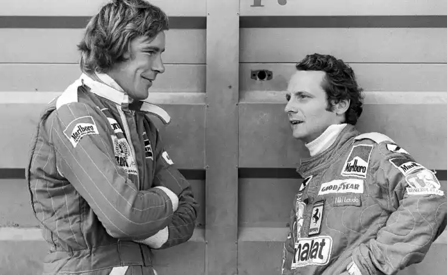

“Plus on s’approche de la mort, plus on se sent vivant” Cette réplique est tirée du film Rush sorti en 2013 qui retrace la saison de Formule 1 de 1976, cette saison est marquée par la rivalité entre James Hunt et Niki Lauda. C’est James Hunt qui prononcera cette phrase.
James Hunt et Niki Lauda au Grand Prix d’Afrique du sud en 1976
Cette réplique est très importante elle donne une vision aux spectateurs du film, la manière des pilotes d'aborder la course et la mort qui est très différente d’une personne normale. Les deux pilotes avaient des personnalité très différentes, James Hunt avait une approche plus audacieuse de la course tandis que Niki Lauda était plus calculateur et pragmatique. Cela montre que les pilotes avaient la même passion mais une approche différente de la course, ce qui ne changeait pas entre les pilotes était l’esprit de compétition, repousser les limites de sa voiture et de soi même pour prouver aux autres qu'on est le meilleur. Les voitures étaient rapides et puissantes mais elles n’avaient pas les mêmes dispositifs de sécurité qu'aujourd'hui et les circuits étaient souvent étroits et bordés de barrières en métal. Pour les pilotes la course était un moyen de vivre pleinement, cela leurs permettaient de repousser leurs limites et de ressentir une excitation et de l’adrénaline que peut d’autre sport pouvaient offrir. Même si cela devient de plus en plus rare, cette réplique résume une partie de l’histoire de la Formule 1 car la mort fait malheureusement encore partie de ce sport, près de 45 pilotes ont malheureusement perdu la vie depuis la création du championnat du monde de Formule 1 en 1950 dont 1 au 21eme siecle.
Le Film
Un Grand Prix dans les années 70
Heureusement aujourd’hui la Formule 1 est devenue beaucoup plus sûre avec des infrastructures de plus en plus sécurisées et un règlement plus strictes sur la sécurité, l’apparition du GPDA et de grands dégagements en gravier pour freiner les voitures qui sortent de la piste, ou l’arrivé des Tecpro qui remplacent les barrières en métal. Pour conclure, la mort est et restera présente dans ce sport car la Formule 1 est un sport dangereux et il y a certains facteurs qui ne sont pas possible de changer comme certains comportement dangereux de certain pilotes ou un problème mécanique qui peut mener à un accident, les pilotes savent qu’ils risquent leurs vies, mais ca fait partie de ce sport qui les passionne.